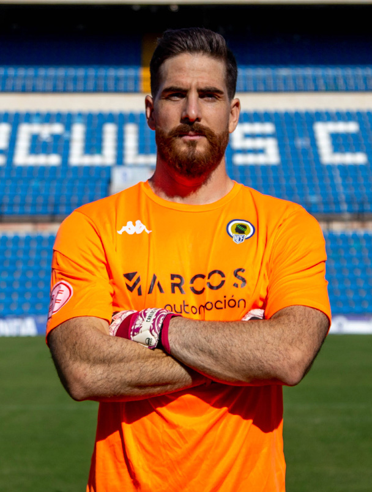
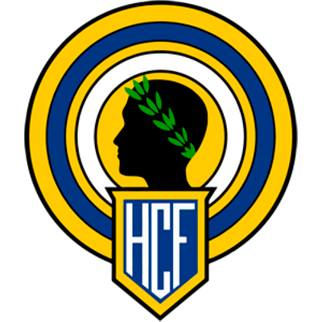
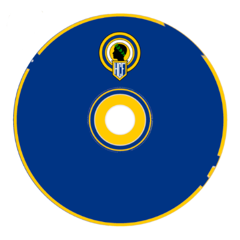
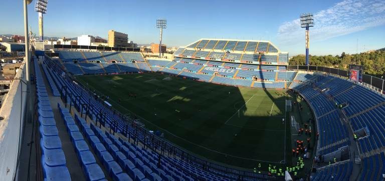

Nombre: Carlos Abad
Dorsal: 1
Nacionalidad: España
Posición: Portero
Goles: 10
Valor en Mercado: 200k


El Hercules CF es un club de fútbol de Alicante fundado en 1914 por Vicente Pastor Alfosea y ha disputado 20 temporadas en Primera Division, ganando 3 de sus 43 debuts en segunda y quedando segundo en la Copa Del Rey en 1936. Actualmente compite en 4 RFEF

Nombre: Carlos Abad
Dorsal: 1
Nacionalidad: España
Posición: Portero
Goles: 10
Valor en Mercado: 200k



Jose Rico Perez
Aforo: 29500
Apertura el 3 de agosto de 1974
¿Cuantas temporadas ha debutado en primera?
20
5
14
19
Puntos: